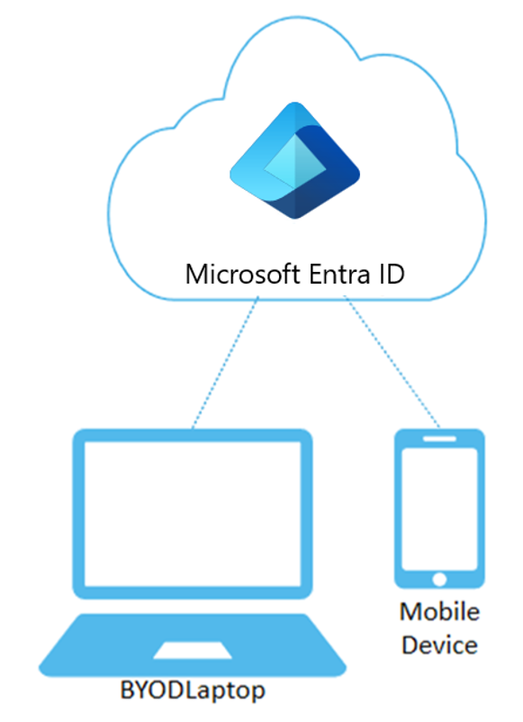
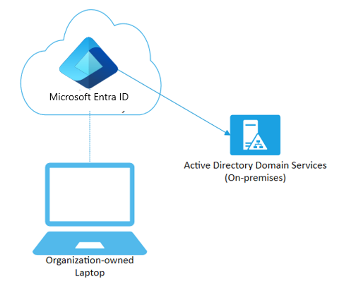
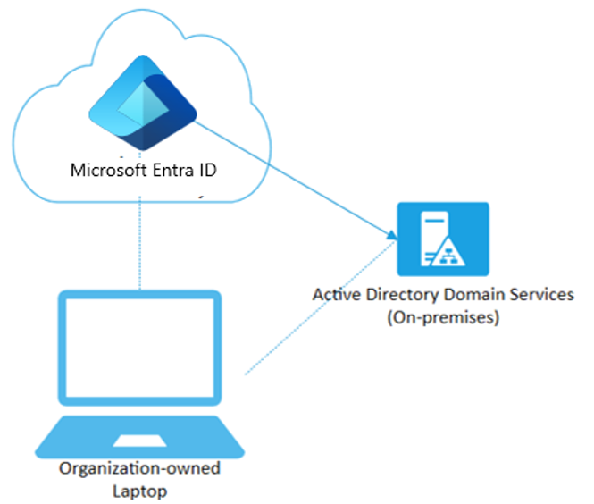

With the proliferation of devices of all shapes and sizes and the proliferation of bring-your-own-device (BYOD), IT professionals are faced with two somewhat opposing goals:
- Allow end users to be productive wherever and whenever and on any device
- Protect the organization's assets
To protect these assets, IT-staff needs to first manage the device identities. IT-staff can build on the device identity with tools like Microsoft Intune to ensure standards for security and compliance are met. Microsoft Entra ID enables single sign-on to devices, apps, and services from anywhere through these devices.
- Your users get access to your organization's assets they need.
- Your IT-staff gets the controls they need to secure your organization.
Microsoft Entra registered devices
The goal of Microsoft Entra registered devices is to provide your users with support for the BYOD or mobile device scenarios. In these scenarios, a user can access your organization’s Microsoft Entra ID controlled resources using a personal device.
| Microsoft Entra registered | Description |
|---|---|
| Definition | Registered to Microsoft Entra ID without requiring organizational account to sign in to the device |
| Primary audience | Applicable to Bring your own device (BYOD), and Mobile devices |
| Device ownership | User or Organization |
| Operating systems | Windows 10, Windows 11, iOS, Android, and macOS |
| Device sign in options | End-user local credentials, Password, Windows Hello, PIN Biometrics |
| Device management | Mobile Device Management (example: Microsoft Intune) |
| Key capabilities | SSO to cloud resources, Conditional Access |

Microsoft Entra registered devices are signed in to using a local account like a Microsoft account on a Windows 10 device, but additionally have a Microsoft Entra account attached for access to organizational resources. Access to resources in the organization can be further limited based on that Microsoft Entra account and Conditional Access policies applied to the device identity.
Administrators can secure and further control these Microsoft Entra registered devices using Mobile Device Management (MDM) tools like Microsoft Intune. MDM provides a means to enforce organization-required configurations like requiring storage to be encrypted, password complexity, and security software kept updated.
Microsoft Entra ID registration can be accomplished when accessing a work application for the first time or manually using the Windows 10 Settings menu.
Scenarios for registered devices
A user in your organization wants to access tools for email, reporting time-off, and benefits enrollment from their home PC. Your organization has these tools behind a Conditional Access policy that requires access from an Intune compliant device. The user adds their organization account and registers their home PC with Microsoft Entra ID and the required Intune policies are enforced giving the user access to their resources.
Another user wants to access their organizational email on their personal Android phone that has been rooted. Your company requires a compliant device and has created an Intune compliance policy to block any rooted devices. The employee is stopped from accessing organizational resources on this device.
Microsoft Entra joined devices
Microsoft Entra join is intended for organizations that want to be cloud-first or cloud-only. Any organization can deploy Microsoft Entra joined devices no matter the size or industry. Microsoft Entra join enables access to both cloud and on-premises apps and resources.
| Microsoft Entra joined | Description |
|---|---|
| Definition | Joined only to Microsoft Entra ID requiring organizational account to sign in to the device |
| Primary audience | Suitable for both cloud-only and hybrid organizations |
| Device ownership | Organization |
| Operating systems | All Windows 10 & 11 devices except Windows 10/11 Home |
| Device management | Mobile Device Management (example: Microsoft Intune) |
| Key capabilities | SSO to both cloud and on-premises resources, Conditional Access, Self-service Password Reset and Windows Hello PIN reset |
Microsoft Entra joined devices are signed in to using an organizational Microsoft Entra account. Access to resources in the organization can be further limited based on that Microsoft Entra account and Conditional Access policies applied to the device identity.
Administrators can secure and further control Microsoft Entra joined devices using Mobile Device Management (MDM) tools like Microsoft Intune or in co-management scenarios using Microsoft Endpoint Configuration Manager. These tools provide a means to enforce organization-required configurations like requiring storage to be encrypted, password complexity, software installations, and software updates. Administrators can make organization applications available to Microsoft Entra joined devices using Configuration Manager.
Microsoft Entra join can be accomplished using self-service options like the Out of Box Experience (OOBE), bulk enrollment, or Windows Autopilot.
Microsoft Entra joined devices can still maintain single sign-on access to on-premises resources when they are on the organization's network. Microsoft Entra joined devices authenticate to on-premises servers like for file, print, and other applications.
Scenarios for joined devices
Although Microsoft Entra join is primarily intended for organizations that do not have an on-premises Windows Server Active Directory infrastructure, you can certainly use it in scenarios where:
- You want to transition to cloud-based infrastructure using Microsoft Entra ID and MDM like Intune.
- You can’t use an on-premises domain join, for example, if you need to get mobile devices such as tablets and phones under control.
- Your users primarily need to access Microsoft 365 or other SaaS apps integrated with Microsoft Entra ID.
- You want to manage a group of users in Microsoft Entra ID instead of in Active Directory. This scenario can apply, for example, to seasonal workers, contractors, or students.
- You want to provide joining capabilities to workers in remote branch offices with limited on-premises infrastructure.
You can configure Microsoft Entra joined devices for all Windows 10 devices with the exception of Windows 10 Home.
The goal of Microsoft Entra joined devices is to simplify:
- Windows deployments of work-owned devices
- Access to organizational apps and resources from any Windows device
- Cloud-based management of work-owned devices
- Users to sign in to their devices with their Microsoft Entra ID or synced Active Directory work or school accounts.

Microsoft Entra Join can be deployed by using a number of different methods.
Hybrid Microsoft Entra joined devices
For more than a decade, many organizations have used the domain join to their on-premises Active Directory to enable:
- IT departments to manage work-owned devices from a central location.
- Users to sign in to their devices with their Active Directory work or school accounts.
Typically, organizations with an on-premises footprint rely on imaging methods to configure devices, and they often use Configuration Manager or group policy (GP) to manage them.
If your environment has an on-premises AD footprint and you also want benefit from the capabilities provided by Microsoft Entra ID, you can implement hybrid Microsoft Entra joined devices. These devices are devices that are joined to your on-premises Active Directory and registered with your Microsoft Entra directory.
| Hybrid Microsoft Entra joined | Description |
|---|---|
| Definition | Joined to on-premises AD and Microsoft Entra ID requiring organizational account to sign in to the device |
| Primary audience | Suitable for hybrid organizations with existing on-premises AD infrastructure |
| Device ownership | Organization |
| Operating systems | Windows 11, 10, 8.1 and 7, along with Windows Server 2008/R2, 2012/R2, 2016 and 2019 |
| Device sign in options | Password or Windows Hello for Business |
| Device management | Group Policy, Configuration Manager standalone or co-management with Microsoft Intune |
| Key capabilities | SSO to both cloud and on-premises resources, Conditional Access, Self-service Password Reset and Windows Hello PIN reset |

Scenarios for hybrid joined
Use Microsoft Entra hybrid joined devices if:
- You have Win32 apps deployed to these devices that rely on Active Directory machine authentication.
- You want to continue to use Group Policy to manage device configuration.
- You want to continue to use existing imaging solutions to deploy and configure devices.
- You must support down-level Windows 7 and 8.1 devices in addition to Windows 10.
Device Writeback
In a cloud-based Microsoft Entra ID configuration, devices are only registered in Microsoft Entra ID. Your on-premises AD has no visibility of the devices. This means that conditional access in the cloud is easy to set up and maintain. However, in this section we are discussing hybrid setups with Microsoft Entra Connect. How can you do on-premises conditional access using devices, if they only exist in Microsoft Entra ID? Device writeback helps you to keep a track of devices registered with Microsoft Entra ID in AD. You will have a copy of the device objects in the container "Registered Devices"
Scenario: You have an application that you want to give access to users only if they are coming from registered devices.
Cloud: You can write Conditional Access policies for any Microsoft Entra integrated applications to authorize based on whether the device is joined to Microsoft Entra ID or not.
On-premises: This is not possible without device writeback. If the application is integrated with ADFS (2012 or higher) then you can write claim rules to check for the device status and then provide access only if the "is managed " claim is present. In order to issue this claim, ADFS will check for the device object in the "Registered Devices" container and then issue the claim accordingly.
Windows Hello For Business (WHFB) requires device writeback to function in Hybrid and Federated scenarios.